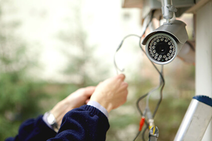

Установка и монтаж видеонаблюдения
Установка видеонаблюдения – это эффективный способ повысить безопасность на ваших объектах (офисы, магазины, склады, рестораны, общественные учреждения). Сегодня монтаж систем видеонаблюдения является неотъемлемой частью организации инфраструктуры для поддержки бизнес-процессов внутри компании.
Для чего осуществляется установка систем видеонаблюдения?
Основными задачами видеонаблюдения, установленного на коммерческих объектах, являются:
- Визуальный контроль ситуации на мониторах, чтобы ваша охрана могла оперативно среагировать на противоправные действия посетителей, покупателей или сотрудников;
- Предотвращение хищений, оперативное восстановление обстоятельств преступления или внештатной ситуации – особенно важно для промышленных объектов, а также для торговых залов;
- Архивирование визуальной информации на определенный срок, чтобы в случае необходимости можно было произвести анализ видео;
- Контроль технологических процессов – это дополнительный канал связи, который позволяет организовать удаленное управление оборудованием, различными системами и комплексами;
- Идентификация личности – это важно для пресечения доступа на объект третьих лиц, которые не должны проникать во внутренний периметр объекта.

В Ярославле монтаж видеонаблюдения входит в «золотой стандарт» качества обслуживания, поскольку позволяет не только поднять безопасность для организации, но также и для посетителей, клиентов и персонала.
Специалисты компании «БАЙТ» выполнят:
- Проектирование систем видеонаблюдения любой сложности (от установки камер в небольшом магазине, до разработки или интеграции сложной системы безопасности);
- Установку ip-камер с высоким качеством (fullHD), аналогового и цифрового оборудования, уличных, офисных систем видеонаблюдения;
- Ремонт и обслуживание уже установленных систем видеонаблюдения.
- При отсутствии антивирусной защиты потребуется установка соответствующего ПО.
В рамках работ «под ключ» осуществляется:
- Техническое обследование объектов;
- Разработка проекта видеонаблюдения, с подбором оптимального оборудования под требования клиента, его бюджет и технические условия;
- Разработка рабочей документации;
- Монтаж слаботочных систем, установка оборудования для видеонаблюдения, программного обеспечения;
- Пуско-наладочные работы.
При необходимости установка камер видеонаблюдения может проводиться в качестве модернизации существующей охранной системы, для снижения издержек. Так вы сможете повысить качество картинки, улучшить свойства и характеристики камер, регистраторов, с относительно небольшим бюджетом.
Цена на системы видеонаблюдения зависят от ее сложности и состава, однако мы всегда готовы предложить индивидуальный подход к каждому клиенту, квалифицированную помощь в выборе оборудования и его обслуживании.